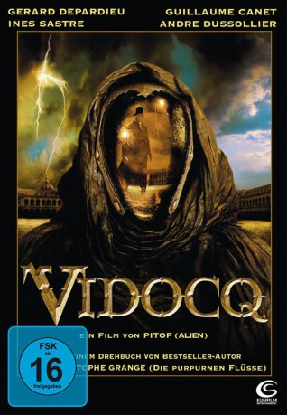

gesehen am 06.01.2016
gesehen am 06.01.2016 
 IMDB-Wertung: 6.5 / 10
IMDB-Wertung: 6.5 / 10  Metascore:
Metascore: 
Paris 1830: Politische Unruhen verbreiten sich in den Straßen, und das Volk bereitet Aufstände vor. Doch auch in den Armenvierteln geht das Grauen um: Ein geheimnisvoller Verbrecher, „Der Alchimist“ genannt, entführt junge Frauen und lässt sie spurlos verschwinden. Frankreichs bester Detektiv Vidocq soll diese Verbrechen aufklären. In einer Glasbläserei kommt es zur Konfrontation mit dem Alchimisten, der eine verspiegelte Maske trägt. Vidocq unterliegt im Kampf, sich an der Kante eines Feuerschachtes festhaltend verlangt er, das Gesicht des Alchimisten zu sehen. Dann stürzt Vidocq in den Schacht und die Presse verkündet seinen Tod.
Jahr: 2001
Dauer: 98 Minuten
FSK: 16
Land: Frankreich Studio: Sunfilm EntertainmentTonspuren:
Untertitel:
Auflösung: 1080p (1920x1040) Größe: 5898 MB
Genre: Action, Thriller, Sci-Fi, Fantasy, Krimi, Mystery
Regisseur: Pitof
Drehbuch: François-Eugène Vidocq, Pitof, Jean-Christophe Grangé
Soundtrack: Bruno Coulais
Darsteller:
 Gérard Depardieu als Vidocq
Gérard Depardieu als Vidocq Guillaume Canet als Etienne Boisset
Guillaume Canet als Etienne Boisset André Dussollier als Lautrennes
André Dussollier als Lautrennes Edith Scob als Sylvia
Edith Scob als Sylvia Moussa Maaskri als Nimier
Moussa Maaskri als Nimier André Penvern als Veraldi
André Penvern als Veraldi Karen Strassman als
Karen Strassman als  Isabelle Renauld als Marine Lafitte
Isabelle Renauld als Marine LafitteDatei: X:\2001\Vidocq (2001, FSK16, 1920x1040) 3D.mkv seit 05.11.2015
Festplatte: HD 1996-2002
 Es gibt insgesamt 102 Filme in der Gruppe '2001'
Es gibt insgesamt 102 Filme in der Gruppe '2001'